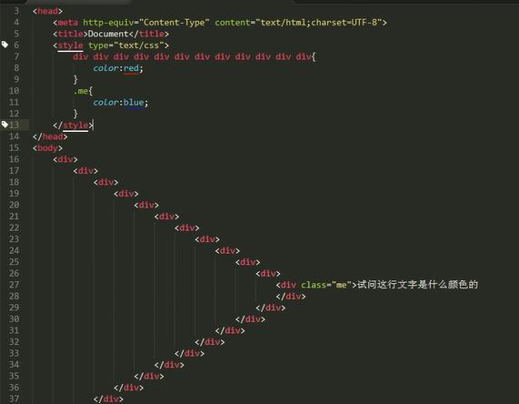

优先级特点：
2.权重可以叠加：
(1)如例2，
首先优先级>层叠性，考虑权重关系而不考虑样式顺序。（层叠性优先下面的样式）
p 1
p.two 11 = 1+10
div.one p 12 = 1+10+1
.two 10
(2)如例3，
#boss #bro 200 = 100+100
#boss p.c2 111 = 100+1+10
(3)如例4，
#president 100
.a1 10但继承样式权重为0
（子元素设置过了的时候，永远优先排除只设置父元素样式的选项，无论父元素权重多少）
（4）如例5，答案蓝色
12个嵌套标签权重12 < 1个类权重10
设置这些数字只是量化的类比，方便理解，并不是真的就是几比几的关系
总结：写样式的时候不要写太多，不然权重太高，想层叠也不好操作
例3：这行字是什么颜色？
例4：这是啥颜色
例5
